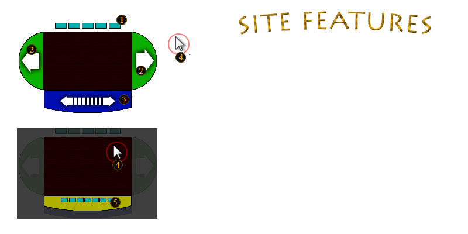

Dear Visitor,
I am pleased to warmly welcome you to my personal web site.
The site offers you a variety of data that you will find useful when looking into questions such as who I am and what my skills are. I designed the web site emphazing on usability and readability to specifically help you find these answers quickly and with ease.
However before browsing the site further, please familiarize with the figure shown below:

Other than that, I wish you an informative browsing experience.
Yours sincerely,
Jurijs Levadnijs